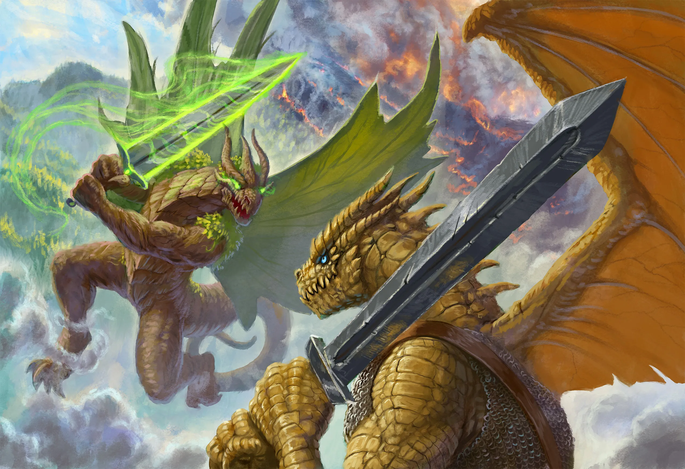
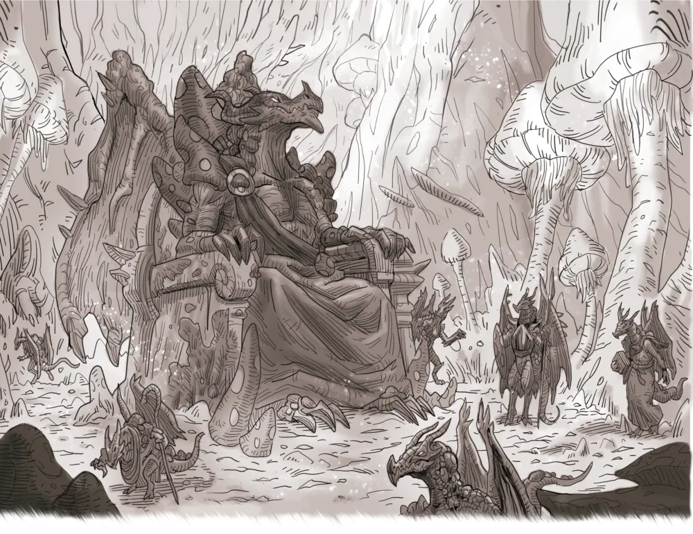
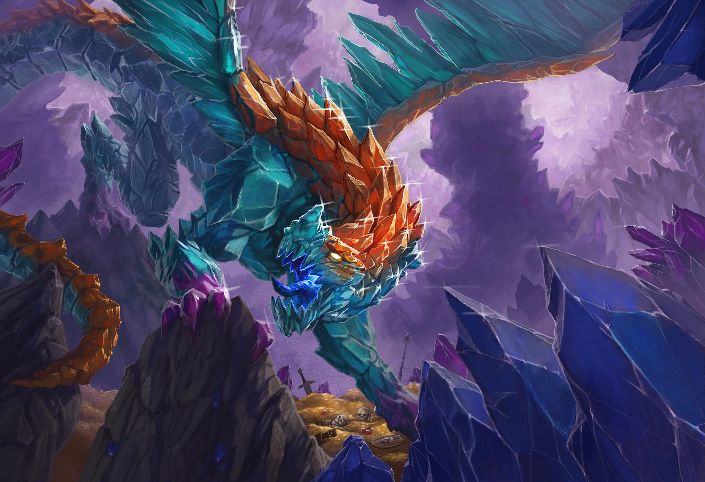
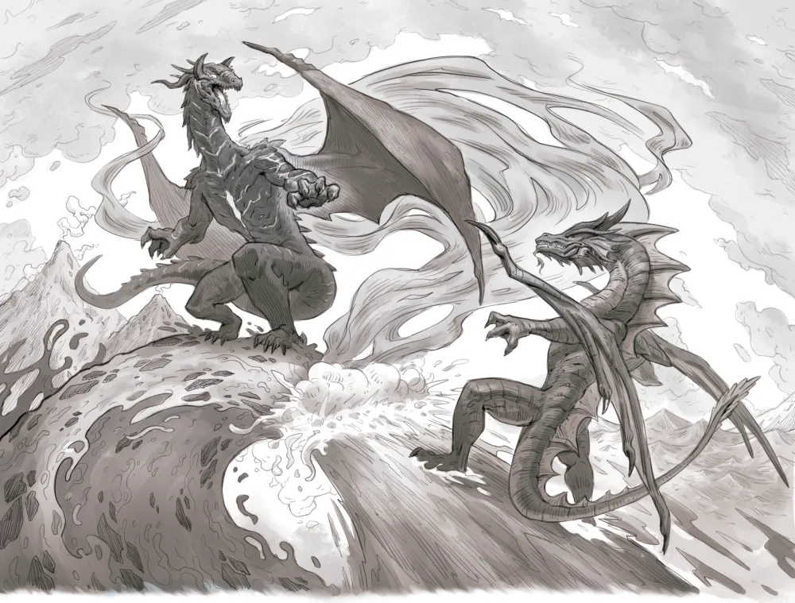

聪慧的读者，凭你敏锐的品味与卓越的判断力，我确信你绝不会犯下这种愚蠢的错误；不过近来我着实碰上了太多蠢货，声称我翻来覆去只懂得谈论永光龙。绝无此事！永恒之光仪式固然是我研究的重心――这在一定程度上是因为它极其迷人却又鲜有人深入考察――但我也完全乐于记录有关传统派巨龙的种种学识。事实上，我向来都在定期撰写这方面的著述。莫非是因为我“永光贤者”的头衔，抑或是我平日里给人的某种印象使然？无论原因为何，在我探访这一隐世巨龙家族的旅途中，我着实搜集到了大量关于传统派莱希龙的劲爆传闻、惊人秘史与确凿铁证。毕竟，我们最为尊崇的巨龙霸主瑞扎尼瓦什交予我的使命，是全面考察并汇报各个鲜为人知的巨龙家族，可绝非仅仅局限于其中的永光龙同族！
正因如此，我十分欣喜地在此与诸位分享我的辛勤硕果。好吧，只怕字面意义上的“硕果”――也就是我拜访丰收龙时获赠的那一大堆鲜果――根本放不到成书之日；况且就算全部晒成干果，数量也远远不够随本书初版每一册附赠一份。不过我可以向诸位打包票，那些果实当真美味绝伦。好了，让我们正式端上主菜吧！
我在旅途中造访过的绝大多数莱希龙聚落与群落里，传统派巨龙都占了绝大多数。这绝不是因为它们将永光龙驱逐出境――恰恰相反，聚落完全乐意像仪式前一样接纳它们。真正的原因在于，即便属于原本更习惯群居的莱希龙支系，成为永光龙的个体往往也更倾向于独自闯荡――不妨称之为“分芽离巢”――去追寻那令世界各地的永光龙不断变强的冒险之旅。因此，这些聚落为我们观察传统派莱希龙的日常生活提供了一扇绝佳的窗口。
在下文中，我将向诸位详尽介绍这样一处地方――我在游历途中偶遇的一座毒蕈龙群落。此处呈现的内容综合了该群落多位居民的不同视角；因此，凡是我能多方印证的细节准确度都颇高，但它同时也反映出这一特定毒蕈龙群落独有的观点与世界观，未必能一概套用到其他所有群落之上。

当我初次踏入赛宾西洛斯这座洞窟群落时，第一时间引起我注意的，便是定居于此的毒蕈龙数量竟如此之众。在漫长的游历生涯中，我也曾不时造访过几处规模颇大的永光龙聚落，却极少见到如此众多的传统派巨龙聚居在同一地点。话虽如此，毒蕈龙结成群落本不足为奇；真正与众不同之处在于，这里是由数个较小的群落在一头名叫阿加里斯塔的强大毒蕈龙庇护下合并而成的大型群落。正因如此，它的人口规模令我过往探访过的其他毒蕈龙群落尽数相形见绌。
阿加里斯塔创立赛宾西洛斯的初衷，是为了庇护那些体型最为娇小、因原本所属群落的创始人遭遇不测而失去强力保护者的毒蕈龙。当我向阿加里斯塔问起往事时，他们告诉我，当年自己原本四处漫游、寻觅建立新群落的地点，不料途中恰逢当地有两个群落因首领遭一名恶名昭彰的屠龙者猎杀而陷入绝境。由于旧巢的方位已经暴露在屠龙者眼中，阿加里斯塔便协助那些娇小的毒蕈龙撤离故地，并与它们携手共建了赛宾西洛斯。
阿加里斯塔秉持的信条是：无论出身哪个群落，赛宾西洛斯的大门永远向每一头毒蕈龙敞开；因此随着岁月推移，越来越多的同族辗转汇聚于此。尽管毒蕈龙是他们重点照拂的对象，但我从其他居民口中听说，只要怀着真诚善意前来寻求容身之所，阿加里斯塔同样乐意接纳其他莱希龙（乃至其他家族的巨龙）。只不过，大多数其他种类的巨龙打从一开始就不怎么向往这种公社式的群居生活，所以除了毒蕈龙之外，群落里无论是暂住还是长居的异族居民都寥寥无几。尽管如此，亲爱的读者，当地居民依然以彬彬有礼的优雅风度与热情好客款待了鄙人，并欣然接受我的访谈，对我的任何提问都知无不言。
有一件事颇令我感到好奇，那便是这座群落人口流入与流出的相对平衡：我固然明白这座群落在创立之初为何规模远超寻常――毕竟它起步时便合并了两个原有群落，还没算上阿加里斯塔原本打算自己建立的第三个群落。但从理论上讲，假定没有其他因素干扰群落的人口进出，这种超常的规模理应只会维持到足够多的成员决定外出建立新群落为止。
经过一番打听，我发现有三大主要因素促使赛宾西洛斯始终保持着如此庞大的人口规模。其一，对于那些无意自立门户开创群落、却又因种种缘由需要寻觅新家的毒蕈龙而言，这座群落早已声名远扬。虽说这并非毒蕈龙的典型处境，但出于各式各样的原因，类似的情况确实不时发生。就这样，赛宾西洛斯渐渐成了一座交融各处毒蕈龙文化的大熔炉：居民虽以本地出身者居多，却也有少数远道而来的异乡客，甚至包括几头原籍远在另一片大陆、最终在此扎根落户的毒蕈龙！
其二，居住在赛宾西洛斯的毒蕈龙在离巢自立之前，往往会比寻常同族在洞窟群落里多逗留许久。由于群落特殊的创立背景，生活在这里的居民普遍觉得此地最为安心稳妥。起初，这在一定程度上是因为那个屠龙者理论上随时可能卷土重来；但天长日久之下，群落温馨惬意的氛围深深吸引了居住于此的巨龙，令它们格外愿意在人生中更长的一段时光里留守家园。
这一点又直接引出了造就庞大人口的第三个因素：那些觉得主窟略显拥挤、不合自己心意的毒蕈龙，往往选择向毗邻相连的洞穴扩建，而非彻底远走他乡。这实际上促使赛宾西洛斯演变成了一座单一的超大型聚落，而非彼此相邻的数个独立群落。值得一提的是，当地居民习惯将这些扩建出的侧窟视作主聚落下辖的分区――好比城市里的不同街坊邻里――而非彼此独立的群落。
不消说，诸位无畏的笔者充分把握住了这次难得的良机，尽可能全面地深入了解了毒蕈龙及其文化与思想观念――至少是从赛宾西洛斯这群毒蕈龙的视角出发。我如预期般见识到了饮食文化方方面面的重要地位，同时也对它们与仙环之间的神秘联系生出了更深的敬意。莫非这正是隐藏在毒蕈龙与仙灵龙之间的秘密纽带？
――永光贤者卡利赞德雷克斯
本章收录了丰富的莱希龙数据资料，供游戏主持人在任何战役中带领玩家踏入自然荒野的奇境。在持续推进的战役里，莱希龙能够胜任形形色色的角色――从劲敌到盟友，从庇护主到竞争对手，乃至从挚爱亲族到贯穿整场战役的幕后大反派。下文将按顺序逐一介绍每一种莱希龙，并完整列出其青年、成年、远古及太古阶段的数据：打头阵的是乔木龙，随后依次为繁花龙、丰收龙、巨藻龙，最后压轴的则是毒蕈龙。
| 龙种分类 | 怪物数据卡 |
|---|---|
| 乔木龙 Arboreal Dragon | 乔木龙雏龙、青年乔木龙、青年乔木龙（施法者）、成年乔木龙、成年乔木龙（施法者）、远古乔木龙、远古乔木龙（施法者）、太古乔木龙、太古乔木龙（施法者） |
| 繁花龙 Floral Dragon | 繁花龙雏龙、青年繁花龙、青年繁花龙（施法者）、成年繁花龙、成年繁花龙（施法者）、远古繁花龙、远古繁花龙（施法者）、太古繁花龙、太古繁花龙（施法者） |
| 丰收龙 Harvest Dragon | 丰收龙雏龙、青年丰收龙、青年丰收龙（施法者）、成年丰收龙、成年丰收龙（施法者）、远古丰收龙、远古丰收龙（施法者）、太古丰收龙、太古丰收龙（施法者） |
| 巨藻龙 Kelp Dragon | 巨藻龙雏龙、青年巨藻龙、青年巨藻龙（施法者）、成年巨藻龙、成年巨藻龙（施法者）、远古巨藻龙、远古巨藻龙（施法者）、太古巨藻龙、太古巨藻龙（施法者） |
| 毒蕈龙 Toadstool Dragon | 毒蕈龙雏龙、青年毒蕈龙、青年毒蕈龙（施法者）、成年毒蕈龙、成年毒蕈龙（施法者）、远古毒蕈龙、远古毒蕈龙（施法者）、太古毒蕈龙、太古毒蕈龙（施法者） |

生活在这个世界上的绝大多数生灵――或者说，绝大多数有理智的生灵――都绝不想与一条肆虐横行的太古龙扯上半点关系。慧眼如炬的读者，我确信你也在此列，而鄙人虽身为成就斐然、声名卓著的巨龙学者，也同样如此。毕竟，当一股原初的自然伟力将怒火倾泻向大地时，一场活生生的天灾便注定降临……而那还仅仅是一条太古龙震怒狂暴时的景象。倘若不止一条呢？当太古龙彼此交锋之时，我们其余生灵又将遭遇什么？那简直是浩劫之中再裹挟着末日。除非交战双方中有一方有理由顾及我们的安危，或者更幸运地，这场冲突发生在远离任何活物的地方，否则附带损害永远是毁灭性的。即便在数百年乃至数千年后重返故地，你依然能看到交战造就的全新地貌特征――那无异于古老交锋在大地上留下的累累伤疤。
生性审慎但偶尔好奇心过盛的鄙人，曾极其不幸地亲眼目睹过这样一场交锋。我绝不想再经历第二次；不过为了龙类学研究的福祉，再加上我当时距离相当遥远、得以基本毫发无损地生还，事后回想起来，我倒可以说很庆幸自己亲历过那么一回――同时也衷心期盼此生再也不要遇到第二次。
事情的起因是，一条太古岩浆龙在与一条太古盐水龙的书信往来中觉得受到了冒犯。水火不容本就如昼夜相悖，这倒不算太过出人意料，但人们总归会指望它们既然都已活到太古龙的岁数，本该能避免这种意气之争才对。然而，岁月虽然能为巨龙带来力量（理论上还有更深厚的智慧），却并不总会带来审慎与冷静的头脑。毕竟，对自身伟力的自知有时反而会抵消智慧的分量，酿成一种无异于宿醉微醺的烈酒――“陶醉于力量”这句俗语绝非空穴来风。
日积月累之下，矛盾步步升级，那条太古岩浆龙最终决定进攻由那条太古盐水龙统治的海滨城市。而聪慧的读者，你一定猜到了：倒霉的鄙人当时偏偏就在那座城里。
随后爆发的原初伟力大碰撞，是我们所有人前所未见、也绝不希望再度目睹的奇观。太古岩浆龙竟然乘着一道真正意义上的熔岩巨浪呼啸而来！那股熔岩究竟从何而来？又是如何维持液态长达那么久的？我从未听说过这样的法术，而这也远超吐息武器的范畴――直到今天，我也没能弄清这个问题的答案。另一边，太古盐水龙则将整片汪洋化作了强悍的武器与护盾。倘若这场战斗发生在别处，结局或许会截然不同；但凭借无尽的海水，盐水龙得以催动滔天巨浪与熔岩狂潮正面相撞，蒸腾起遮天蔽日的滚滚蒸汽――当时看得如痴如醉的鄙人，已将这震撼的一幕定格在随附的速写之中，以飨后世。自那一刻起，岩浆龙似乎当真泄了几分气势（或许字面意义上也是“泄了蒸汽”？），连同攻势也一并受挫；但它依然保有着足以夷平整座城市的恐怖力量。不过，由于盐水龙将重心完全放在防御上（未必是出于利他之心，多半更是为了维护自身的尊严），整座城市大体得以保全。最终，岩浆龙对这场僵局失去了兴致，认定盐水龙想必已经吸取了教训，便主动撤离了战场。以岩浆龙的标准来看，这已经算得上相当体面的让步了，对我们所有人而言实乃万幸。若是它们当真死战到底，整座城市恐怕都难逃覆灭。
原初龙源自各个元素位面（唯有一类显著的例外），它们本身便是元素威能与庄严的具现化身，而原初太古龙更是将这一点展现得淋漓尽致。这也使得研究和记述它们反而相对容易一些，因为它们就像海啸、地震、飓风或火山喷发一样――实在谈不上低调隐蔽。然而另一方面，暗影龙往往完全隐于暗处行事，惯用棋子与代理人来避免暴露底牌；太古暗影龙所编织的间接代理人网络，更是令其年轻同族只能凭空想象、望尘莫及。
正因如此，哪怕对无畏的鄙人而言，收集其余四种原初太古龙的全部资料加起来，都比挖掘出半点关于太古暗影龙的可靠情报要容易得多！诚然，世间并不乏自称记述了太古暗影龙真实事迹的传闻，但若缺乏独立佐证，我又怎能断定那不是太古暗影龙自己蓄意散布、用来误导我追查方向的烟幕宣传呢？所幸在付出巨大心血之后，再加上一次侥幸的突破――几位心怀不满的暗影龙亲族在背地里互相拆台（当然，所有内容均经过独立核实，绝非圈套）――我总算为你，我尊贵的读者，梳理出了所有最关键的要点。倘若它们当真筹划了一场滴水不漏、毫无破绽与自相矛盾之处的虚假情报行动，成功在细节上蒙蔽了我的双眼，那也只能请你原谅我的这一疏漏了――尽管我并不认为事实如此。
如果你是个屠龙者，并且因为这点情报偏差而丧了命，我的致歉对你而言恐怕也没什么安慰作用；不过话说回来，我从一开始就更希望你干脆别读我的著作。我已经收到了太多熟人寄来的愤怒信件，他们总是在你们这帮人的尸体上翻出我的出版物，然后反过来指责我是在教唆挑起袭击。为了全世界龙类学研究的未来，我恳求你们别再把我的学术著作当成屠宰指南来用了――这些文字纯粹是为了增进世人对巨龙威仪的理解而写的。
或许毫不令人意外，收集太古水晶龙的资料是最轻松的。它们中的大多数在聊起各种话题之余，根本停不下谈论自己的嘴。平心而论，它们确实有许多精彩绝伦的故事与见闻可供分享，而且与我有幸直接接触过的大多数其他太古龙不同，它们在绝大部分叙述中都出人意料地坦诚。倘若你们之中有任何一位正在阅读鄙人的拙作，请知悉我深深感念诸位的贡献，并随时乐意在您方便的任何时候与您再度畅谈。
此外，通过剖析太古盐水龙为其建立的聚居地所颁布的法典，来了解它们的性格特征，也是一桩妙趣横生的事。从一条巨龙将哪些行为定为轻罪或重罪，尤其是从它愿意掏出自己宝库里辛苦攒下的钱财去资助哪些工程与公共服务上，你就能清楚看出它究竟最看重什么。毫无疑问，我们巨龙都很擅长夸下海口；但归根结底，如果你不肯拿出与龙吻豪言相称的真金白银，那空谈终究只是空谈。那些敞开宝库金库来建设改善治下聚居地的太古盐水龙，已然毫无疑问――哪怕以暗影龙的浓重阴影来衡量也毫无悬念――证明了什么才是它们真正挂怀的事物。
――永光贤者卡利赞德雷克斯
正如卡利赞德雷克斯在笔记中所言，本附录探讨的是一个独立于本书其余部分的主题：它介绍的并非莱希龙，而是来自元素位面及更遥远界域的巨龙谱系――原初龙！虽然卡利赞德雷克斯的研究重心在于太古龙，但为了完整起见，他在此呈现了整个原初龙谱系的全貌，让你能够将各个年龄段的盐水龙、云龙、水晶龙、岩浆龙与暗影龙作为劲敌或盟友引入你的冒险之中！

| 龙种分类 | 怪物数据卡 |
|---|---|
| 盐水龙 Brine Dragons | 盐水龙雏龙、青年盐水龙、青年盐水龙（施法者）、成年盐水龙、成年盐水龙（施法者）、远古盐水龙、远古盐水龙（施法者）、太古盐水龙、太古盐水龙（施法者） |
| 暗影龙 Umbral Dragons | 暗影龙雏龙、青年暗影龙、青年暗影龙（施法者）、成年暗影龙、成年暗影龙（施法者）、远古暗影龙、远古暗影龙（施法者）、太古暗影龙、太古暗影龙（施法者） |
| 岩浆龙 Magma Dragons | 岩浆龙雏龙、青年岩浆龙、青年岩浆龙（施法者）、成年岩浆龙、成年岩浆龙（施法者）、远古岩浆龙、远古岩浆龙（施法者）、太古岩浆龙、太古岩浆龙（施法者） |
| 云龙 Cloud Dragons | 云龙雏龙、青年云龙、青年云龙（施法者）、成年云龙、成年云龙（施法者）、远古云龙、远古云龙（施法者）、太古云龙、太古云龙（施法者） |
| 水晶龙 Crystal Dragons | 水晶龙雏龙、青年水晶龙、青年水晶龙（施法者）、成年水晶龙、成年水晶龙（施法者）、远古水晶龙、远古水晶龙（施法者）、太古水晶龙、太古水晶龙（施法者） |